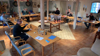

Her finder du en liste over de øl vi har brygget i kronlogisk rækkefølge (nyeste øverst).
Hver øl får en lille historie med på vejen samt en kort beskrivelse af hvad øllen indholder og det stykke musik der ligger til inspiration.
Man kan ikke kalde sig hjemmebrygger, hvis ikke man har prøvet at brygge en Stout. Det var der en gang en der sagde. Og da vi jo gerne vil kalde os selv for hjemmebryggere tænkte vi at det nu var tid til at få dette lille issue på plads. Der findes jo rigtig mange varianter af Stout og vi har valgt at lave en med både lakrids og kaffe. Og til en ordentlig kvalitets Stout må man anvende kvalitets ingridienser. Det fleste blev indkøbt hos vores fortrukkene bryg butik - Humlecentralen, men lakridsen kommer fra "Lakrids by Bülow" og vi valgte en slow cooked lakridsstang på 30g, der hedder "New Day". Den indeholder også Whisky og smager helt fantastisk. Lakridsen blev tilsat de sidste 34 min. af kogningen. Kaffen blev brygget på stemple kande og tilsat afkølet lige inden flaskningen. Den er kommet på flaske d. 12. december 2020 og i skrivende stund venter vi på at den får lageret lidt længere inden vi skal smage på den. Denne gang har vi vovet at ekspermitere lidt og har tilsat yderligere lakrids lige inden flaskningen til halvdelen af flaskerne. Vi er lidt spændte på om det giver nogen forskel når lakrids tilsættes så sent i processen. Vi smagte naturligvis på øllen inden vi kom den på flaske og selv om der ingen kulsyre er, så smagte den nu allerede rigtig godt. Det lover godt.
Navnet på øllen blev "I was Born to Love You". Det skyldes primært at især en af os har en forkærlighed for Stout/porter typerne.
Og så er det forøvrigt et rigtig godt nummer som Queen har lavet. Lyt selv herunder.
Skulle nogen få lyst til at brygge en Stout med lakrids og kaffe, så ligger vores opskrift på beerCalc under navnet:
#8 - "I Was Born To Love You" - Lakrids/Kaffe Stout
Rød Tuborg har altid været en popolær øl hos hos begge, så da vi mente at det var tid til at forsøge os med et pilsner bryg var det naturligt for os at se om vi ikke kunne ramme den røde Tuborg så nær som muligt. Det lykkes ikke helt, men en god rødlig pilsner fik vi som vi også begge er yderst tilfredse med. Vi fik lavet en rimlig simple opskrift hvor vi bla. anveder en gamle Carlsberggenser gær (er dog ikke sikker på det er helt den samme som anvendes i den røde Tuborg). Det viste sig også at være den hidtil billigeste øl at fremstille, som vi har brygget indtil dato. Helt sikkert en øl vi skal prøve at brygge igen.
Navnet på øllen blev "You don't fool me". Det skulle jo være en Rød Tuborg Klon, men i en blind test vil de fleste nok sige "mig narre du ikke med den her" eller noget i den retning. Det er vi sådan set enige i, men stadigvæk - en god pilsner.
Vores bud på en opskrift til en Rød Tuborg klon, findes på beerCalc under navnet: #7 - "You Don't Fool Me" - Rød Lager
Som beskrevet under bryg #4 er vi nu blevet en del af "Beer-battle" gruppen og eftersom vi er "de nye i klassen" fik vi lov til at bestemme hvad opgaven skulle være ved Beer-battle nr. 6 (vores nr. 2 - de andre har været gang i noget tid inden vi kom med). Vi besluttede at vi skal prøve at lave en øl der kommer så tæt på "Grimbergen's Double Ambree" som muligt. Da det ikke er en opskift der ligger frit tilgængeligt, stiller det lidt krav til kreativiteten og man bliver nød til at smage et par stykker af original øllen for at definere hvad der skal puttes i bryggen for at ramme denne unikke smag (det er en del af opagven som vi holder meget af...). For at ramme den rigtige sødme valgte vi, udover særligt udvalgte malte, at tilsætte 200g svesker (desinficert i rom) direkte i gæringen. Dette viser sig at være en god ide.
Igen gav Covid 19 os en del udfordringer og overvejelser, men efter at have undersøgt nøje og taget alle de forskrevne forholdsregler, mente vi godt at det var forsvarligt at afholde beer-battlen. Hvert bryg-team fik sit eget bord, med egne snacks, vand osv. og det endt med at blive en virkelig hyggelig eftermiddag med masser af smagsprøver og erfaringsudvekslinger. Der var to konkurencer og dermed to bedømmelses skemaer at udfylde. Et for til at bedømme hvor tæt den smagte øl er på originalen (alle havde en reference øl i et seperart glas) og et andet for hvorfor en øl man selv synes smager bedst. Alle øl blev pakket ind i sølvpapir og samme person med handsker sørgede for at der blev hældt smagsprøver op i alles medbragte glas.
 Og hvordan gik det så for vores øl dennegang?
Det må vist siges at vi havde hjemmebane fordel. Det var i hvertfalod vores øl der løb med sejeren i begge kategorier! Det skal dog retfærdigvis siges at ingen lykkes med at ramme Grimbergens smag helt, så den opskrift har de stadigvæk for sig selv.
Vi havde selvtilliden iorden da vi bryggede så titlen blev "This could be heaven" (man skal jo tro på det). Dette er nok også vores bedste bryg indtil videre.
Kom i den rette stemning ved at lytte til nummeret herunder.
Modsat "Grimbergen" så vil vi godt dele vores opskrift så ligger frit tilgængelig på beerCalc under navnet:
#6 - "This could be heaven" - Grimbergen Ambree klon
Nu var tiden endlig kommet til at prøve kræfter med IPA'en som især en af os er ret vilde med. Vi fik skruet en opskrift sammen på BeerCalc og fik handlet ingridenserne ind. På selve brygdagen, ændrede vi alligevel lidt i tiderne for hvor længe de forskellige humler skulle koges med i urten for at se om de måske kunne booste humle smagen uden at den blev for bitter. Vi forsøgte os også med "dry-hopping", hvilket vil sige at man tilsætter en del humle til gæringen i en del af tiden, hvorefter man fjerner den igen. Vi synes den blev ganske god - og bitter på den gode måde.
Lidt for bitter til de fleste, men det er ok - så er der jo mere øl til os!
For de bryg kyndige kan vi oplyse at vi anvendte 50 g Centinnial i en time, 100 g Centinnial + 50 g Hallertauer i en halv time under kogningen og så tilsatte vi yderligere 100 g Centinnial som dry-hop i 4 dage, istedet for 15 min. smags humle under kogningen.
Der er vist ikke så meget mere at sige om denne øl. Ikke rigtig nogen problemer under brygningen og et resultat der modsvare vores forventninger (sådan nogenlunde).
Vi havde lidt sværdt ved at stoppe når det kom til tilsætning af humle, så denne øl fik naturligvis navnet "Don't Stop Me Now", hvilket forøvrigt er et fremragende nummer som I kan lytte lidt til herunder.
(igen nåede vi ikke rigtigt at få lavet en "rigtig" etikette, og heller ikke dennegang ser det ud til at påvirke smagen på øllen)
Opskriften ligger frit tilgængelig på beerCalc under navnet: #5 - "Don't Stop Me Now" - Centennial IPA
Efter at have brygget vores første øl efter egen opskrift, blev vi af Morten og Morten (måske bedre kendt under navnet "Morten Bryg") inviteret med i en gruppe af andre dedikerede håndbryggere, der mødes et par gange
om året til en dyst i håndbryg. Næste opgave var at alle skulle lave en Bock øl og alle skulle anvende samme opskrift! Den opskrift der var valgt var lidt mere krævende end det vi hidtil havde prøvet med 2 x Decoction (noget af urten tappes af undervejs og koges ind, inden det tilsættes igen). Vi må nok indrømme at vi var lidt sene til at få denne bryg sat over, og selv om selv dagen for øl-battlen blev udsat pga. en vis Covid 19 virus, så var øllen nok lige ung nok. Det var nok en del af årsagen til at vi endte på en flot 6. plads (ud af 6...). Da der var tale om en ægte blind smagning er der jo ikke så meget at sige til det, andet at vi må stramme os lidt mere an næste gang. MEN - det var fantatisk at side og nørde igennem med ligesindede og vi fik en del gode ideer og indtryk med os hjem. Vi fik smagte på en masse gode Bocks og selv om opskriften var den samme, så var der ikke to øl der var ens!
Et par måndere senere havde vi selv samme øl med til en alm. håndbryg aften i vores lokale øl-entusiast afdeling og et par dage inden måtte vi lige smage om den overhovedt var værd at servere for andre. Vi blev meget positivt overrasket over hvor god den var blevet af at få lov til at ligge de par måneder og modne ordentligt.
Så lektien er at man skal give sin øl den lageringstid som den behøver, uanset hvor svært det kan være at vente...
Det var en hård øvelse at skulle brygge en så kompliceret opskrift, vi er jo stadigvæk begyndere, så vi blev hurtige enige om at øllen skulle navngives efter nedenstående skønne sang.
(vi nåede aldrig at få lavet en "rigtig" etikette til denne øl, men det kan man nu ikke smage på øllen)
Skulle nogen få løst til at bryge en Bock efter samme opskrift, så findes den på beerCalc under navnet:
#4 - "It's a Hard Life" - Revival of the Bock
Så blev det tid til at lave vores egen opskrift og da vi var i Juli månede, ja så er det jo tid til at planlægge juleøllen.
Vi fik sat en fornuftig opskrift sammen på Beercalc og tog selv ud og vejede ingridienserne af, diskuterede valg af humle og gær med de dygtige folk hos Humlecentralen og følte os i det hele taget mere og mere som rigtige håndbrygere..
Det er blevet til en meget mørk juleøl, med en ret kraftig smag. Første mundfuld kan virke noget overvældende, men efter at have nippet lidt mere til den bliver man rigtig fanget af de mange smags nuancer i øllen. Man finder smag af lakrids (selv om der ikke er skyggen af lakrids i), men også toner af rosiner og abrikoser kan anes, hvilket rent faktisk har været med i maltningen. Vi synes at denne øl nydes bedst tempereret og bør drikkes i ro og mag med en eller flere gode venner.
Og så kan man jo altid lytte lidt til nedenstående fantastiske julesang imens. Vi tror fuldt og fast på at en af årsagerne til at vores første egen producerede opskrift er blevt så god som den er, skyldes at netop denne sang blev spillet under både brygning og aftapning.
(må indrømme et det stak lidt af da jule etiketten skule designes - men på den anden side - det er jo kun jul engang om året...).
Opskrift kan findes på beerCalc. Søg på opskrift: #3 - "Thank God It's Christmas" - Belgisk Juleøl
Vores andet bryg er også brygget ud fra et færdigt all-grain sæt, men denne gang har vi forsøgt os med en belgisk inspirert øl type. Vi følte os noget mere fortroligt med udstyret og (tror nok) vi husked det hele. Denne øl synes vi selv blev rigtig god og selv vores familie og venner er enige. Vi har haft den med til en håndbrygger aften i vores lokale øl-afdeling af øl-entusiaterne og her fik vi god og konstruktiv kritik, hvilket har givet os mere mod og energi til at fortsætte vores lille bryggeri. Kind of magic nydes naturligvis bedst til disse toner:
Dette er vores første bryg. Og for at sikre os at det første bryg ikke skulle blive en fiasko, valgte vi at købe et færdigpakket all-grain sæt. Vi valgte en Ducklington Brown Ale type - den skulle være nogenlunde lige til at gå til.
Eftersom det var vores første bryg på vores ny-indkøbte halv-automatiske bryg anlæg, var der en del nyt vi skulle holde styr på og hotline sms linien, til vores øl-mentorer, Morten og Morten, var i brug flere gange.
På trods af at vi til tider følte os presset (korrekt - deraf navnet), lykkes det faktisk at få en ganske udmærket øl ud af det.
Farven er perfekt, duften fantatisk, den skummer rigtigt og har tilpas med kulsyre, alkohold procenten er ..... noget laver end forventet. Vi ved nu at det formentlig skyldes at vi brugte ca. 5 liter mere sparkling vand (skylle vand) end der stod i opskriften.
Smagen er ok, men mangler lidt power. Alt i alt - en god sommer øl som bør nydes iskold til disse liflige toner: